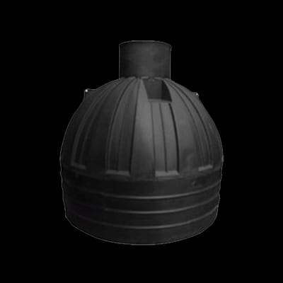

Septic Tanks
Horizontal Septic Tank 3,000L
3,000 litres
KSh 72,500
Horizontal septic solution for residential and light commercial use.
Compare products, indicative prices and practical selection guidance before requesting a current quotation.

Horizontal septic solution for residential and light commercial use.
Medium-capacity horizontal septic tank.
Large horizontal septic tank for higher-demand properties.
Compact vertical septic tank for space-conscious installations.
Septic sizing depends on how many people use the property, wastewater volume and the broader on-site sanitation design. A tank should not be selected from price alone. A qualified installer or professional familiar with local requirements should assess the whole system.
The supplied catalogue includes horizontal 3,000L, 5,000L and 10,000L options plus a vertical 1,700L model. Orientation affects excavation footprint and how the product fits the available site. Confirm current installation specifications before deciding.
Keep access for inspection and maintenance in mind. Drainage, groundwater, soil conditions and the route from the building to the treatment area all affect installation. Avoid starting excavation before you have the correct product dimensions and site plan.
A septic tank is one part of an on-site wastewater system. Inlets, outlets, ventilation, downstream disposal or treatment and maintenance access also matter. Product purchase should follow a complete sanitation plan.
Confirm capacity, dimensions, orientation, current price, delivery access, installation instructions and how ongoing desludging or maintenance access will be handled.
Septic systems are designed for wastewater, not roof runoff or yard drainage. Sending stormwater into the system can overload treatment and shorten retention time. Keep site drainage separate unless a qualified design says otherwise.
Future desludging requires access. Leave a practical route for service equipment and keep inspection points reachable. A hidden tank with no maintenance access creates avoidable problems later.
Check delivery to your town · Browse all Roto tank sizes and prices · Read tank buying FAQs